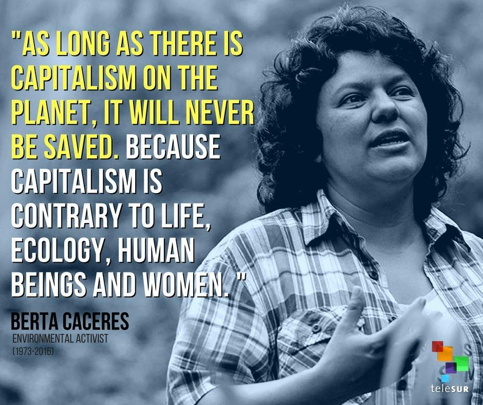

About Berta Cáceres
Berta Cáceres was a powerful woman. Who felt strongly about women.Berta Cáceres grew uo during the violence occuring in Central America in the 80s. Her and her family took in refugees from El Salvador. She was taught a young age to stand up for whats right. She dedicated her life to defending the land and earth. Berta was the General Coordinator of the Civic Council of Popuplar and Indigenous Organizations of Honduras otherwise known as COPINH. She was always trying her best to protect the wildlife and Earth around her. We need to learn to not harm otheres just because they like or believe something that we do not or do not agree with. She was killed out of dislike for loving and wanting to keep the Earth and nice and safe place. Sadly On March 2 of 2016 a group of men broke into her home and murdered her for the defense of indigenous rights and the rights of Earth. Her friend survived by pretending to be dead. The COPINH is still recieving death threats. They are bringing justice to her assination. She was awarded many awards. Some of which include the Goldman Environmental Prize. She said “Let us come together and move forward with hope as we defend and care for the Earth and its spirits.” I imply this as saying that we need to all join forces and help better our Earth that we all share and should want to have nice.